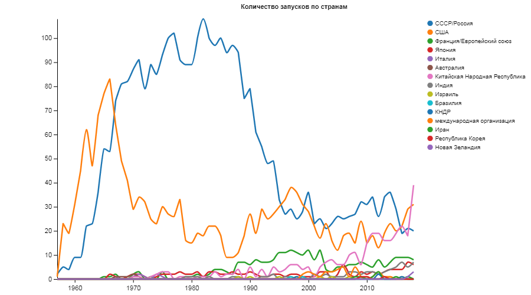
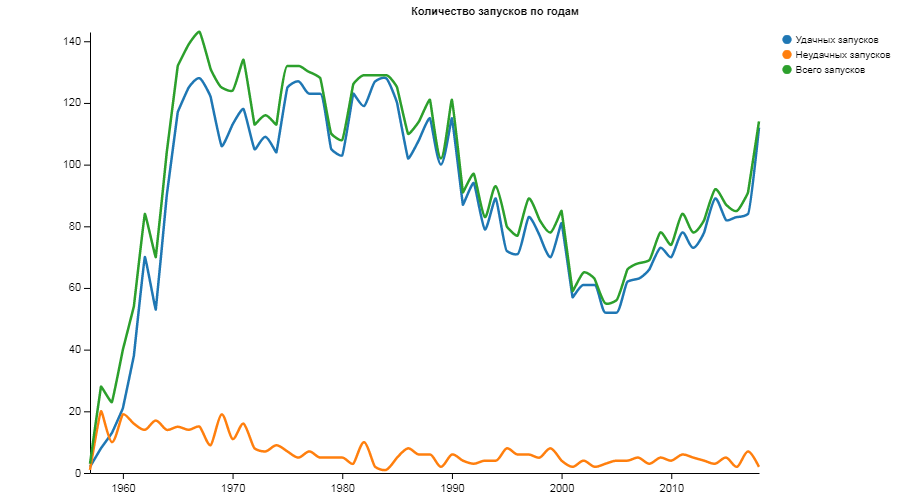

Основные понятия.
Впервые термин «космонавтика» появился в названии научного труда Ари Абрамовича Штернфельда «Введение в космонавтику», который был посвящён вопросам межпланетных путешествий. В 1933 году работа была представлена польской научной общественности, но не вызвала интереса и была издана лишь в 1937 году в СССР, куда в 1935 переехал автор. Благодаря ему же, в русский язык вошли слова «космонавт» и «космодром».
В словарях слово «космонавтика» отмечено с 1958 года. В художественной литературе слово «космонавт» впервые появилось в 1950 году в фантастической повести Виктора Сапарина «Новая планета».
Физическое освоение космоса человеком началось в 1944 году в Германии при испытании боевой баллистической ракеты Фау-2. На некоторых тестах ракета достигала высоты 190 км, что, по современным меркам, считается суборбитальным полётом. Ракеты Фау-2 были непилотируемыми. Однако начало практическому освоению космоса было положено в 1957 году. Под руководством Королёва была создана первая в мире межконтинентальная баллистическая ракета Р-7, которая в том же году была использована для запуска первого в мире искусственного спутника Земли.
Текущее положение российской космонавтики
Государственная корпорация по космической деятельности «Роскосмос» — российская корпорация, управляющая космической отраслью страны, созданная в 2015 году путём преобразования Федерального космического агентства «Роскосмос» по инициативе заместителя Председателя Правительства Российской Федерации Дмитрия Олеговича Рогозина.
«Роскосмос» берёт начало в Министерстве общего машиностроения СССР и является его правопреемником, как и Федерального космического агентства «Роскосмос», Российского космического агентства, Российского космического агентства при Правительстве Российской Федерации, Российского авиационно-космического агентства. В его состав входят предприятия и научные организации, созданные ещё в советскую эпоху.
В мае 2015 года Госдума в первом чтении приняла внесённый президентом пакет законопроектов о создании государственной корпорации «Роскосмос». Вице-премьер Дмитрий Рогозин, выступая перед депутатами, заявил, что главная задача новой структуры космического назначения — «обеспечить единство управления ракетно-космической отраслью».
Офис «Роскосмоса» располагается в Москве. Центр управления полётами находится в городе Королёве. Центр подготовки космонавтов располагается в подмосковном Звёздном городке. Роскосмосом используются космодромы «Байконур», «Восточный» и «Плесецк».
«Роскосмос» осуществляет функции по обеспечению реализации государственной политики и правовому регулированию, оказанию государственных услуг и управлению государственным имуществом в сфере космической деятельности.
Основными направлениями деятельности корпорации являются: пилотируемая космонавтика, исследование планет, изучение солнца, астрофизика и создание искусственных спутников Земли. Одним из важных направлений деятельности корпорации является развитие туризма, как на земле, так и в космосе.
С 1992 по 2015 годы Россия ежегодно являлась мировым лидером по количеству ежегодных успешных запусков ракет, в общей сложности 19 лет (лишь пять лет (с 1996 по 1999 год, 2003 год) уступая США), удерживая примерно по 30—40 % мирового рынка пусковых услуг.
Руководитель назначается и увольняется Президентом Российской Федерации. Действующим с мая 2018 года главой корпорации является Дмитрий Рогозин.
«Роскосмос» сотрудничает с другими космическими агентствами, осуществляя вывод на орбиту иностранных спутников, совместную работу в рамках МКС, включающую доставку иностранных космонавтов на станцию, изготовление и поддержание в рабочем состоянии оборудования, заказанного за рубежом.
Корпорация активно сотрудничает с Министерством обороны Российской Федерации, Министерством сельского хозяйства Российской Федерации, корпорацией Росатом, Национальным агентством по космическим исследованиям Беларуси и другими, а также с учебными заведениями с целью подготовки новых кадров.
Количество запусков по странам

Количество запусков по годам
